Blog
性格と行動の話
ビッグファイブ心理学をベースに、日常の行動・習慣・人間関係を読み解く記事を書いています。
1人が好きな人は冷たいのか
頑張っているのに評価されない人の性格
インポスター症候群とは？成功しているのに自信が持てない心理
人前で話すのが苦手な人の性格
片付けられない人の性格
すぐ謝る人・謝れない人の心理
③ ビッグファイブ別・自分らしさを残した印象の整え方
人に嫌われるのが怖い人の性格
返信が遅い人・早い人の性格
② 服装・髪型・清潔感で性格の見え方はどう変わるのか
① 見た目で性格はどこまでわかるのか
ストレス解消法は性格によって違う ビッグファイブで見つける自分に合った発散方法
なぜあの人は人をいじるのか ビッグファイブで解く「いじり」の心理
やたらと否定ばかりする人の心理学と対処法
友達が多い人・少ない人の性格の違い ビッグファイブが示すこと
SNSの使い方は性格で決まる ビッグファイブで読み解くインスタ・X・TikTokの相性
子育てスタイルは性格で決まる——「親の関わり方」と子どもとの相性問題
人のせいにしていた人は、次はAIのせいにする——責任転嫁の心理は時代が変わっても同じだ
AIに全てを渡す時代が、もう始まっている——人間関係という最後のコンテキスト
AIに渡す情報が偏っていたら、AIは正しそうな間違いを返す——コンテキスト不足の落とし穴
AIに代替されない人材の条件——ビッグファイブが示す「自分だけの武器」の見つけ方
職場で孤立しやすい人の性格
仕事でミスが多い人の性格
仕事ができるのに自信がない人の性格
報連相できない人の心理と対処法
職場で「仕事してるアピール」が強い人・他人を蹴落とす人のビッグファイブ
仕事で評価されやすい性格・損しやすい性格
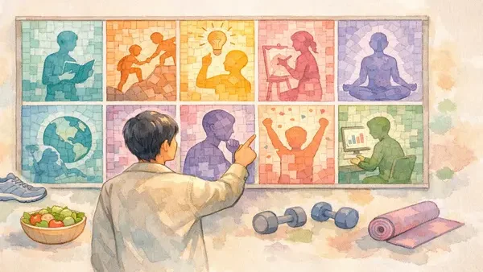
性格タイプ別ダイエット完全ガイド——続かないのは意志の問題じゃない
優しい人が太りやすい理由と、それを変える方法
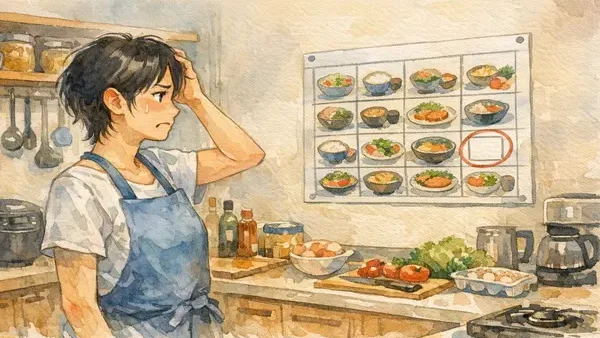
真面目な人ほどダイエットで詰まる理由
一人でやるから続かない 外向的な人のダイエット設計
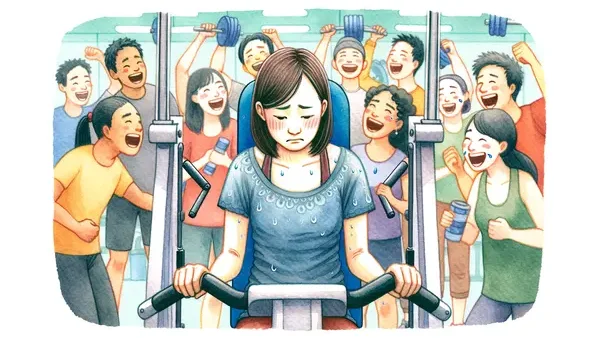
内向的な人のダイエットが続かないのは、環境が間違っているからだ
飽き性の人のダイエットが続かない本当の理由
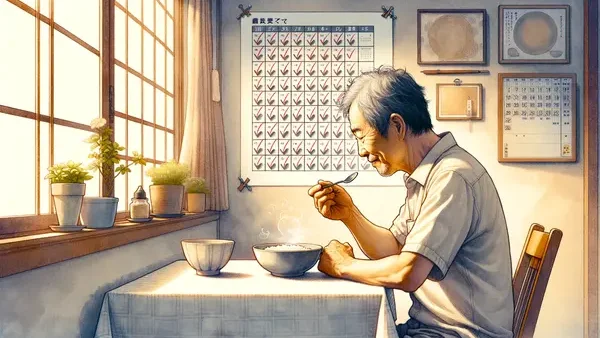
同じことを続けられる人が、ダイエットで一番やってはいけないこと
空気を読む人が太りやすい本当の理由 断らない人のためのダイエット設計
自分流を曲げない人のダイエット 競争心を正しく使う方法
メンタルが安定している人がダイエットで陥る、意外な落とし穴
三日坊主の人がダイエットを続けるには、意志力より先にやることがある
気を使いすぎて疲れる人が知るべき、自分の性格の正体
気を使いすぎる人がバカに見られる、本当の理由
気を使いすぎる人が自己肯定感を上げると、なぜか「行動できる人」に好かれる
完璧主義の人が一番やっていないこと——それは「始めること」
性格は変えられる？心理学が出した、正直な答え
HSPとは？繊細な自分を理解するための基礎知識
性格で変わる金銭感覚 貯まる人と貯まらない人の違い
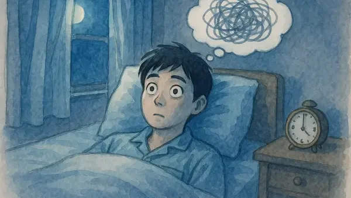
性格と睡眠の関係 ビッグファイブ5因子で見る寝つき・睡眠の質の違い
性格と学習の関係 ビッグファイブ5因子で見る成績・勉強法の違い
テスト不安と性格 ビッグファイブで見る「本番で実力が出ない」人
先延ばし癖と性格 ビッグファイブで見る「やらなきゃのに手がつかない」理由
価値観を科学する——シュワルツ理論が明かす「何を大切に生きるか」の正体
「内向的な性格を直したい」は本当に必要か 外向性の科学と変わることの意味
EQ診断とは 感情を「測れる力」として捉え直す5因子の科学
総合レポートとは 10種類の診断が「一つの人物像」に収束する仕組み
統制の所在とは 「頑張っても意味がない」感覚の正体
ダークトライアドが高い人との距離の取り方
ダークトライアドとは 「扱いにくい自分」を科学で見る3因子の正体
あの人のダークトライアド診断とは 「なぜこの人と関わるとしんどいのか」を言語化する
あの人の愛着スタイル診断とは 「突然冷たくなる人」「離れると不安になる人」の正体
あの人のEQ診断とは 感情を「扱える人」かどうかを行動で見る方法
ビッグファイブマン分析とは EQ・ダークトライアド・愛着スタイルを統合したチーム相性の上位分析
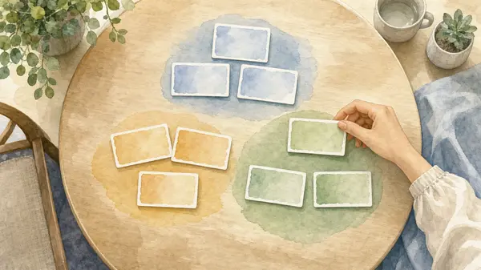
グループ分けツールとは 性格データで「公平なチーム」を自動生成する方法
チーム相性診断とは 性格で読む「合う組み合わせ」の科学
「性格が良い人」がモテない本当の理由
考えすぎて動けない人の恋愛——感受性が高い人が一番損をしてる
完璧主義者の恋愛——「ちゃんとしてほしい」が積み重なる理由
飽きっぽい人の恋愛——好奇心が愛情を食べてしまう理由
優しすぎる人の恋愛——「我慢」に気づかないまま尽くしてしまう理由
感情が安定しすぎる人の恋愛——「もっと焦ってよ」が生むすれ違い
愛着スタイルとは？人との距離を決める心理学の仕組み
「好き」にも6種類ある——恋愛スタイル理論でわかる、あなたの愛し方
片思いで終わる人、付き合ってから好きになる人——恋愛の「正しい順番」は性格によって違う
「優しい人」ほど暴力的パートナーに引き寄せられる理由——繊細な人が陥る恋愛の罠
恋愛がうまくいくのに「何か足りない」——外交性が高い人の恋愛
想いが溢れれば溢れるほど動けない。内向的な人の恋愛の仕組み
性格と恋愛相性の科学 ビッグファイブ5因子で見るカップルの傾向
「なんでいつも忘れるの」——ルーズな人が恋愛で詰められる、本当の理由
「どうしてそんなに頑固なの」——意見が強い人の恋愛で起きること
変化を嫌う人の恋愛——保守的な性格が生む「安心感」と「息苦しさ」
喧嘩の仕方でわかる性格タイプ——ビッグファイブで見る「怒り方」の科学
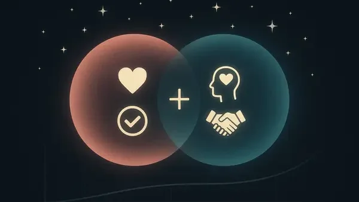
長続きするカップルの性格パターン ビッグファイブで見る相性の科学
HSPの恋愛 繊細な人が「疲れない」関係を作るには
嫉妬しやすい性格の科学 ビッグファイブ5因子で見る嫉妬の正体
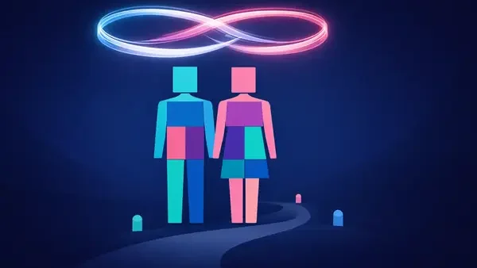
結婚と性格の科学 ビッグファイブで見る長く続く関係の条件
彼氏と性格が合わない ビッグファイブで読む「合わなさ」の正体と対処法
RIASEC理論とは何か Hollandの6タイプで見る「自分に合う仕事」の探し方
性格と仕事の相性を科学的に判定する ビッグファイブ×キャリア適性の仕組み
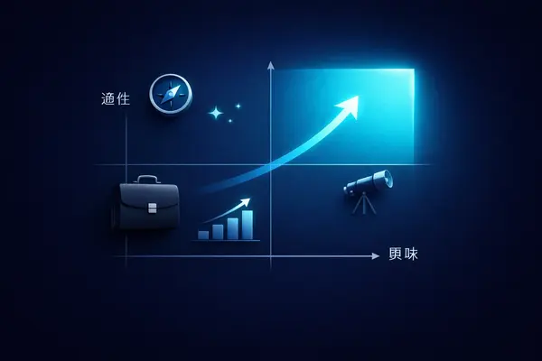
やりがいは選んだ後に育つ 「適性×興味」の統合で見えるキャリアの本命
職場の人間関係が疲れる理由 性格タイプで読む「合わない」のメカニズム
協調性が低い人に向いている仕事 「NO」と言える性格の強み
外向性が低い人の仕事の強み 「静かな人」が実力を発揮できる環境
ビッグファイブで分かる、あなたに向いている仕事・向いていない仕事
マインドセットとは？「才能は変えられる」と信じる人が結果を出す理由
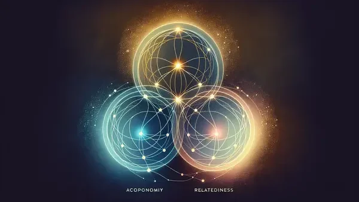
やる気の正体——自己決定理論が教える「動く人」と「動かない人」の違い
営業の仕事と性格 ビッグファイブで見る向いている人・向いていない人
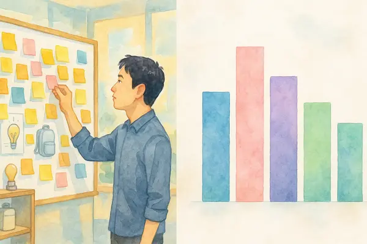
企画・商品開発の仕事と性格 ビッグファイブで見る向いている人・向いていない人
マーケティングの仕事と性格 ビッグファイブで見る向いている人・向いていない人
経営・管理の仕事と性格 ビッグファイブで見る向いている人・向いていない人
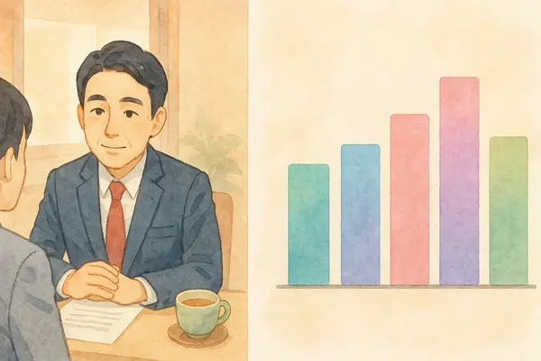
人事・労務の仕事と性格 ビッグファイブで見る向いている人・向いていない人
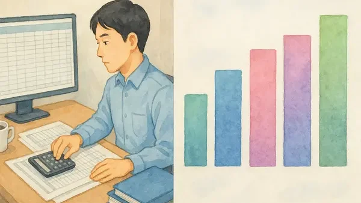
経理・財務の仕事と性格 ビッグファイブで見る向いている人・向いていない人
SE・システム開発の仕事と性格 ビッグファイブで見る向いている人・向いていない人
研究・開発の仕事と性格 ビッグファイブで見る向いている人・向いていない人
デザイン・クリエイティブの仕事と性格 ビッグファイブで見る向いている人・向いていない人
広報・PRの仕事と性格 ビッグファイブで見る向いている人・向いていない人
法務の仕事と性格 ビッグファイブで見る向いている人・向いていない人
カスタマーサポートの仕事と性格 ビッグファイブで見る向いている人・向いていない人
製造・生産の仕事と性格 ビッグファイブで見る向いている人・向いていない人
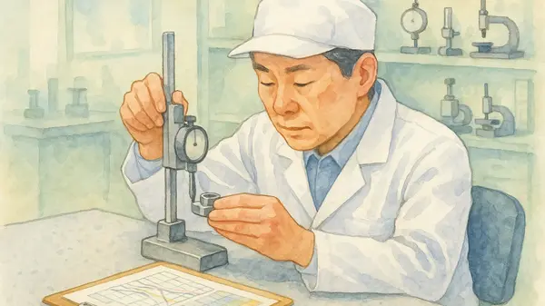
品質管理の仕事と性格 ビッグファイブで見る向いている人・向いていない人
物流・購買の仕事と性格 ビッグファイブで見る向いている人・向いていない人
施工・現場管理の仕事と性格 ビッグファイブで見る向いている人・向いていない人
医療・看護の仕事と性格 ビッグファイブで見る向いている人・向いていない人
教育・教職の仕事と性格 ビッグファイブで見る向いている人・向いていない人
コンサルティングの仕事と性格 ビッグファイブで見る向いている人・向いていない人
Web開発の仕事と性格 ビッグファイブで見る向いている人・向いていない人
データ・AIの仕事と性格 ビッグファイブで見る向いている人・向いていない人
営業企画の仕事と性格 ビッグファイブで見る向いている人・向いていない人
小売・店舗の仕事と性格 ビッグファイブで見る向いている人・向いていない人
土木・建築の仕事と性格 ビッグファイブで見る向いている人・向いていない人
フリーランスの仕事と性格 ビッグファイブで見る向いている人・向いていない人
人事・採用の仕事と性格 ビッグファイブで見る向いている人・向いていない人
テストで性格がわかる心理学、科学的信憑性トップ10
相性診断、相手に頼めなかった話——あの人の性格（ビッグファイブスコア）を自分で予測する方法
占いから「使える診断」へ——星座・血液型・MBTIを卒業してビッグファイブに辿り着いた話
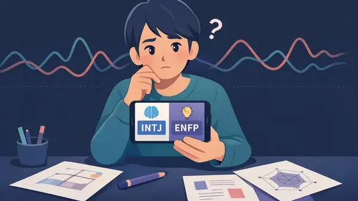
MBTIの診断結果、なぜ変わるのか——科学的に見た3つの弱点
MBTIの診断結果、嘘じゃない？ビッグファイブとの違いを心理学の観点から解説
開放性が高い人の特徴と強み・弱み
開放性が低い人の特徴と強み・弱み
誠実性が高い人の特徴と強み・弱み
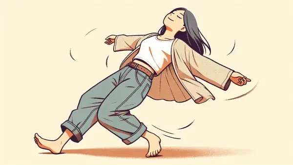
誠実性が低い人の特徴と強み・弱み
外向性が高い人の特徴と強み・弱み
外向性が低い人の特徴と強み・弱み
協調性が高い人の特徴と強み・弱み
協調性が低い人の特徴と強み・弱み
神経症傾向が高い人の特徴と強み・弱み
神経症傾向が低い人の特徴と強み・弱み
神経症傾向が高い人の「強み」と付き合い方 不安を武器にする視点
MBTIとエニアグラムをビッグファイブで読み解く 対応表と科学的な位置づけ
すぐ怒る・感情的になりやすい性格の科学 「怒り」の正体をビッグファイブで解く
ビッグファイブのファセット（下位尺度）とは 30の側面で性格の解像度を上げる
神経症性の6つのファセット（下位尺度）を徹底解説
誠実性の6つのファセット（下位尺度）を徹底解説
外向性の6つのファセット（下位尺度）を徹底解説
開放性の6つのファセット（下位尺度）を徹底解説
協調性の6つのファセット（下位尺度）を徹底解説
ChatGPTに相談したことがある人へ — 返ってくる答えが変わるたった一つの方法